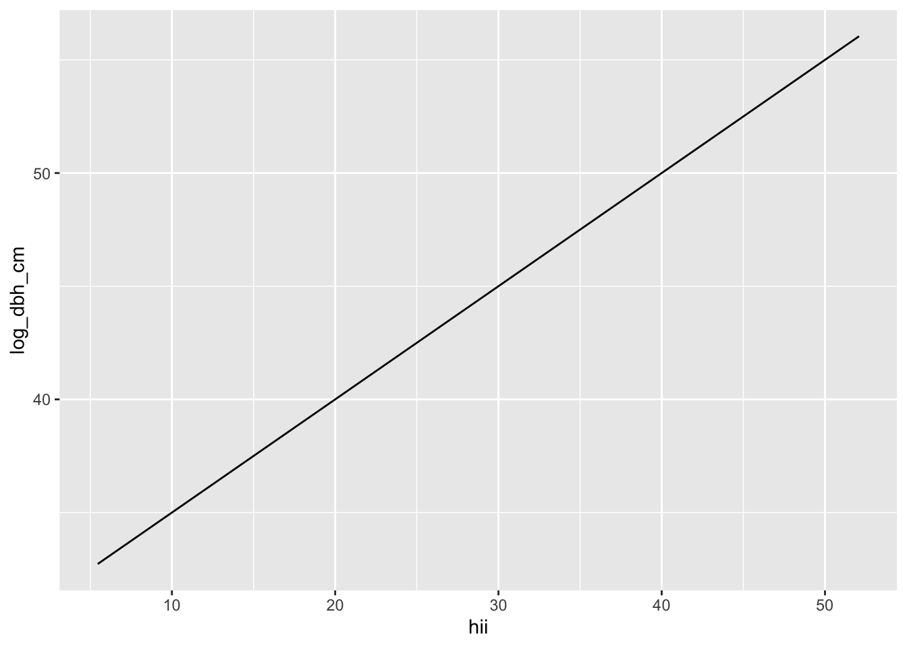
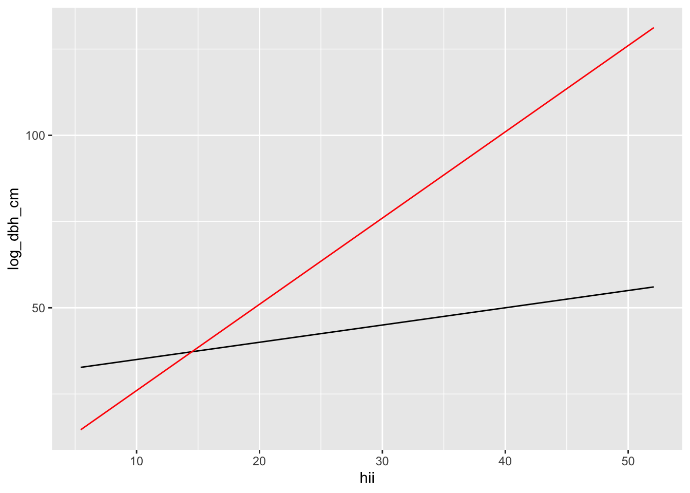

This lab will see use leveraging the built-in capabilities of R to make likelihood methods easier…finally.
You can download the lab template .qmd file for this lab here:
The template will prompt you to work through the following sections.
This lab picks up where we left off with the lab in lab04-simple-linear.qmd. Again, let’s start by reading in the data and wrangling it into a workable format
# read-in from githubtree <-read.csv("https://raw.githubusercontent.com/uhm-biostats/stat-mod/refs/heads/main/data/OpenNahele_Tree_Data.csv")hii_geo <-read.csv("https://raw.githubusercontent.com/uhm-biostats/stat-mod/refs/heads/main/data/hii_geo.csv")# merge the data into one data.frame and cleandat <-left_join(tree, hii_geo) |># remove missing DBH valuesfilter(!is.na(DBH_cm)) |># add a column for log-transformed DBH since this will be # the variable we use as a response variablemutate(log_dbh_cm =log(DBH_cm)) |># remove NAs for elevationfilter(!is.na(hii)) |># remove "uncertain" for native statusfilter(Native_Status !="uncertain")
Joining with `by = join_by(PlotID)`
15.1 Turns out there’s an easier way
Previously we found the parameters of our models by creating a likelihood functions “by hand” and maximizing those functions “by hand” using optim. It’s probably not surprising that there is an easier way.
Because all our models have been linear (meaning the variables are linear combinations of each other) we can find the parameters of our model with the built-in R function lm, which stands for “linear model.”
15.1.1 Predicting log DBH from native status
Let’s use the model where we predict log_dbh_cm based on Native_Status to demonstrate lm
nat_stat_mod <-lm(log_dbh_cm ~ Native_Status, data = dat)
Before even looking at the results, let’s look at the syntax. We are telling lm that we want to make a model where log_dbh_cm can change based on the groups in Native_Status. The tilde symbol ~ communicates to R that log_dbh_cm “is a function of” Native_Status, or “is predicted by” Native_Status. Note also that we tell lm where to find those columns by specifying data = dat.
The “coefficients” are the parameters of our model. But they don’t look like the parameters we used when maximizing our boutique likelihood function “by hand.” What’s going on? The reason is the way we specified our model and the way lm specifies the model are different. We created a parameter for the mean of native trees mu_nat and the mean of non-native trees mu_non.
R does it different. The (Intercept) refers to the mean of "alien" trees (recall Native_Status contains values of "alien" and "native"). The coefficient Native_Statusnative has information about the mean of native trees, but in a kind of weird way: the value 0.3199303 is the difference between the mean for "alien" and the mean for "native".
So if you compare these results to what you found when maximizing your boutique likelihood by hand you should have roughly the same number for mu_non as (Intercept). And mu_nat - mu_non should be roughly the same as Native_Statusnative from lm. The numbers will only be roughly the same because there is always a small amount of error with optim whereas lm uses exact equations to find its answers.
Those exact equations are based on minimizing the sum of square error, which is how regression was done for decades because the math (for math nerds) is “simple.” The surprising result is that minimizing sum of square error is mathematically the same as maximizing the likelihood function. That’s a point worth remembering when we move onto other probability distributions besides the normal.
The lm function is a huge help, but we still need to know about the likelihood. Luckily there are built-in functions to help. logLik tells us the log likelihood value at its maximum
logLik(nat_stat_mod)
'log Lik.' -37576.37 (df=3)
Compare that result to your results from optim, specifically the value element of the output from optim. The numbers should be roughly the same.
15.1.2 Predicting log DBH from human impact
Now work through those same steps but for the model predicting log_dbh_cm from hii. The steps are:
use lm to make a model object
compare the coefficients with your results from maximizing your boutique likelihood function; explain for yourself why and how the results are similar or different
compute the maximum log likelihood with logLik
15.2 More complex models thanks to lm
Now because we don’t have to do everything by hand we can build more complex models. In the example we’ve been working with there is an interesting story having to do with how log DBH changes based on native status and human impact acting together. To see that we need to introduce an interaction effect in our model. This is how:
# an example of a model with an interaction effectnat_hii_mod <-lm(log_dbh_cm ~ Native_Status * hii, data = dat)# have a looknat_hii_mod
Call:
lm(formula = log_dbh_cm ~ Native_Status * hii, data = dat)
Coefficients:
(Intercept) Native_Statusnative hii
2.461799 0.487728 -0.001513
Native_Statusnative:hii
-0.010481
There are now four coefficients: (Intercept), Native_Statusnative, hii, and Native_Statusnative:hii. That last coefficient Native_Statusnative:hii represents the interaction and here’s what it means:
First we need to be clear on the interpretation of hii—this is the slope of log_dbh_cm changing across hii, but only for the group of trees falling into the "alien" category. That means the slope of log_dbh_cm changing across hii is given by adding the hii slope to the coefficient Native_Statusnative:hii. So the slope for native trees is
The slope for natives is more steep, meaning the dbh of native trees is more severely decreased by human impact compared to non-native trees. Non-native trees are more resilient to human impact.
An interesting finding indeed!
15.2.1 Visualizing interactions
To understand what an interaction is, let’s visualize how the mean or log_dbh_cm changes across native statuses and human impact. Here’s how.
Use ggplot to visualize a function
# a function representing an equationmy_fun <-function(x) { y <-30+0.5* xreturn(y)}# set up a ggplot with our data...ggplot(dat, aes(hii, log_dbh_cm)) +# ... but then plot the function, not the data itselfgeom_function(fun = my_fun)

Figure 15.1
You are not limited to plotting just one function:
# a function representing an equationmy_next_fun <-function(x) { y <-1+2.5* xreturn(y)}# plot multiple functionsggplot(dat, aes(hii, log_dbh_cm)) +geom_function(fun = my_fun, color ="black") +geom_function(fun = my_next_fun, color ="red")

Figure 15.2
Now your turn: use the framework to plot two lines: one for native trees, one for non-native trees. All the coefficients you need can be found in
nat_hii_mod$coefficients
(Intercept) Native_Statusnative hii
2.461799195 0.487727513 -0.001512589
Native_Statusnative:hii
-0.010481310
Lastly, interpret your results, what do they mean to you?